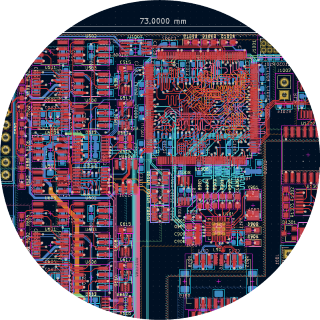

Welcome to my github.io page
PROJECTS
You will find links to some of my GitHub projects below. Most of my projects are designed with PCBs using STM32 MCUs. Many of them run FreeRTOS and have an Ethernet interface. Additionally, I have a project where I experimented with ThreadX (https://github.com/BehrensG/ThreadXTest) and another where I tried out Verilog (https://github.com/BehrensG/ETH1CFGEN1).
CV
You fill find my Curriculum Vitae (CV).